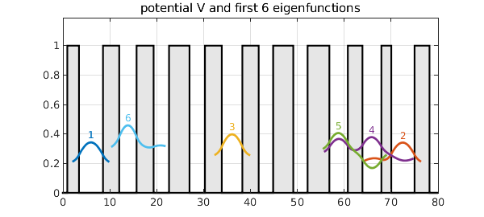
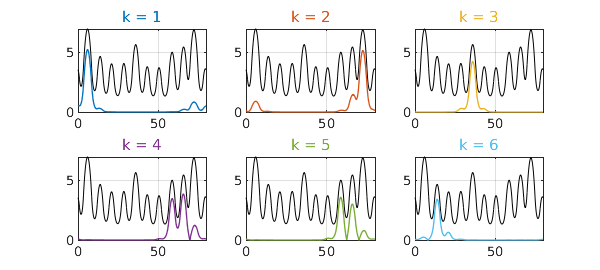
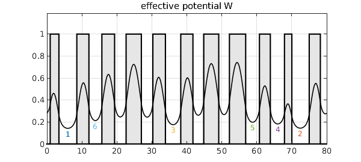

There has been a lot of attention lately to the idea of a "landscape function" for explaining localization of eigenmodes, e.g. of the Schrodinger equation with a random potential [1-3]. This example gives a 1D illustration in Chebfun.
We construct a potential consisting of a sequence of square wells whose widths vary randomly. Then we compute the first six eigenfunctions of the 1D periodic Schrodinger operator with this potential. (The code, related to Chebfun quantumstates, is adapted from p. 247 of Exploring ODEs.) The eigenfunctions are localized, decaying rapidly away from their central maxima. The plotting emphasizes the localization by cutting off each curve near where it falls below $0.1$ in absolute value.
LW = 'linewidth'; CO = 'color'; HA = 'horizontalalignment';
CT = 'center'; FS = 'fontsize'; colors = get(gca,'colororder');
d = 80; xk = 1:3.7:d; np = length(xk); rng(2), xk = xk + .5*randn(1,np);
x = chebfun('x',[0 d]);
V = 0*x; for k = 1:2:np, V = V + heaviside(x-xk(k)) - heaviside(x-xk(k+1)); end
H = chebop(@(phi) -diff(phi,2) + V*phi, [0 d], 'periodic');
[F,D] = eigs(H,6,'sr');
F = simplify(F,1e-4); [e,ii] = sort(diag(D)); F = F(:,ii);
xx = linspace(0,d,600); grey = .9*[1 1 1];
fill(x,V,grey), grid on, ylim([0 1.19]), hold on
for k = 1:6
c{k} = colors(k,:);
f = F(k); ff = f{1}(xx);
if mean(ff)<0, ff = -ff; end
i1 = find(abs(ff)>0.1,1,'first')-5; i1 = max(i1,0);
i2 = find(abs(ff)>0.1,1,'last')+5; i2 = min(i2,length(ff));
ff([1:i1 i2:end]) = NaN; ff = e(k) + .3*ff;
plot(xx,ff,LW,2,CO,c{k})
[val,pos] = max(ff); pos = xx(pos);
text(pos,val+.05,int2str(k),CO,c{k},HA,CT,FS,12)
end
title('potential V and first 6 eigenfunctions'), hold off

Here are the eigenvalues:
e
e = 0.189936867910165 0.193031559592993 0.234814489202257 0.257867761093037 0.277429384692209 0.290807997909735
The landscape function, introduced in [3], is the solution $u$ to $Hu=1$ with periodic boundary conditions. If we scale each eigenfunction by its eigenvalue, the eigenfunctions fit under the landscape function (see e.g. Prop. 3.1 of [1]). Here are the first six.
u = H\1;
for k = 1:6
f = F(:,k); lam = e(k); f = f/(lam*norm(f,inf)); ff = f{1}(xx);
subplot(2,3,k), plot(u,'k',LW,0.7), grid on, hold on
plot(xx,abs(ff),LW,1,CO,c{k}), hold off
title(['k = ' int2str(k)],CO,c{k})
end

The reciprocal of the landscape function is the effective potential, $W$, introduced in [2]. In general, $W$ is smoother than $V$ by two derivatives, making a big difference in a case like this where $V$ is discontinuous. If you read off the levels of its local minima, they match perfectly (in this example) the order of the lowest eigenvalues of the original problem.
W = 1/u;
clf, fill(x,V,grey), grid on, ylim([0 1.19]), hold on
plot(W,'k',LW,1.2), hold off, title('effective potential W')
[val,pos] = min(W,'local'); [val,ii] = sort(val); pos = pos(ii);
for k = 1:6
text(pos(k),val(k)-.05,int2str(k),CO,c{k},HA,CT,FS,12)
end

This example illustrates the basic mathematics of the landscape function and effective potential, but it doesn't show their power. That becomes especially apparent with examples in two or more dimensions, as illustrated in [1-3].
[1] D. N. Arnold, G. David, M. Filoche, D. Jerison, and S. Mayboroda, Computing spectra without solving eigenvalue problems, SIAM J. Sci. Comput. 41 (2019), B69--B92.
[2] D. N. Arnold, G. David, D. Jerison, S. Mayboroda, and M. Filoche, Effective confining potential of quantum states in disordered media, Phys. Rev. Lett. 116 (2016), 056602.
[3] M. Filoche and S. Mayboroda, Universal mechanism for Anderson and weak localization, PNAS 109 (2012), 14761-14766.